CUDA（一）：编程模型
一、CUDA：用于异构计算的平台
CUDA 是一种通用的并行计算平台和编程模型，它利用 NVIDIA GPU 上的并行计算能力，以更高效的方式解决复杂的计算问题。通过使用 CUDA，你可以像使用中央处理器那样，直接对 GPU 进行计算操作。
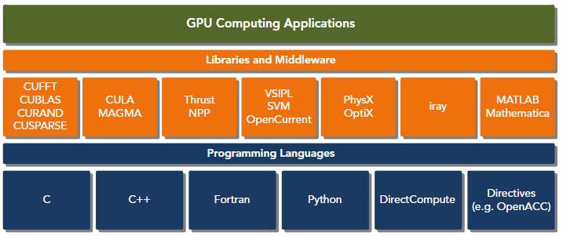
CUDA 提供了两种用于管理 GPU 设备以及组织线程的 API 级别，如下图所示：
- CUDA Driver API
- CUDA Runtime API
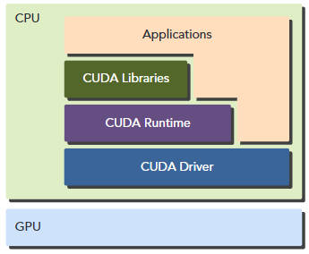
驱动程序 API 是一种低级别的接口，编程起来相对较为困难。不过，它提供了对 GPU 设备使用的更多控制能力。而运行时 API 则是一种更高级别的接口，建立在低级的驱动程序 API 之上。运行时 API 的每个函数都会被分解成更基本的操作，然后交给驱动程序 API 执行。
一个 CUDA 程序由以下两部分组合而成：
- host code 运行在 CPU 上
- device code 运行在 GPU 上
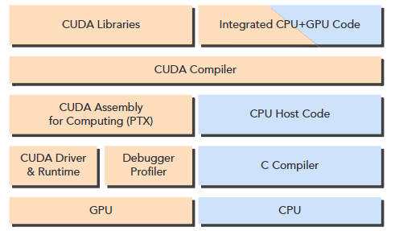
二、CUDA 编程模型
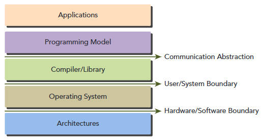
CUDA 程序的典型处理流程遵循以下模式：
-
将数据从 CPU 内存复制到 GPU 内存中。
-
调用内核来处理存储在 GPU 内存中的数据。
-
将数据从 GPU 内存复制回 CPU 内存。
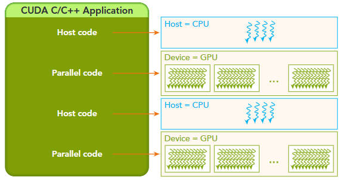
2.1 内存管理
CUDA 编程模型假设系统由主机和设备两部分组成，每部分都有独立的内存空间。内核函数是在设备内存中运行的。为了能够完全控制系统的行为并达到最佳性能，CUDA 运行时提供了一些功能，比如分配设备内存、释放设备内存，以及实现主机内存与设备内存之间的数据交换。下表列出了标准 C 语言函数及其对应的 CUDA C 语言函数，用于内存操作相关的工作。
| standard C functions | CUDA functions |
|---|---|
| malloc | cudaMalloc |
| memcpy | cudaMemcpy |
| memset | cudaMemset |
| free | cudaFree |
在 GPU 的内存层次结构中，两种最重要的内存类型分别是全局内存和共享内存。全局内存类似于 CPU 的系统内存，而共享内存则类似于 CPU 的缓存。不过，GPU 的共享内存可以通过 CUDA C 内核直接进行控制。
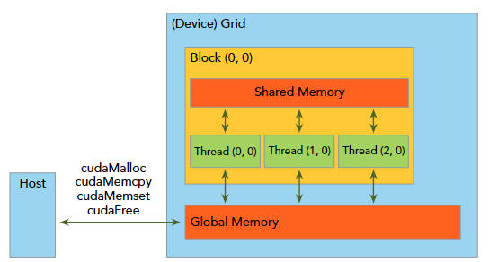
2.2 组织线程
当内核函数从主机端被调用时，执行流程会转移到某个设备端。在该设备端，会生成大量的线程，每个线程都会执行内核函数所指定的指令。掌握如何组织这些线程是 CUDA 编程中的关键部分。CUDA 提供了线程层次结构的抽象机制，使得我们可以方便地组织线程。这种线程层次结构分为两级：线程块 (threads)和网格块 (grids)，如下图所示：
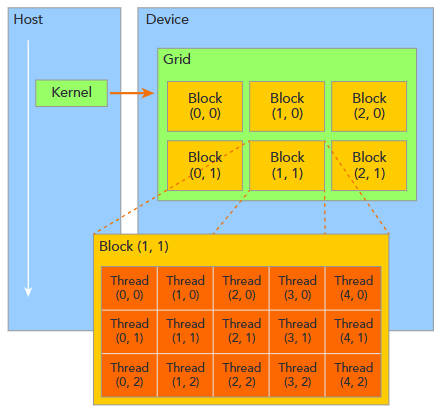
由单个内核启动的所有线程集合被称为“网格”。网格中的所有线程共享同一个全局内存空间。一个网格由多个线程块组成。一个线程块是指一组可以相互协作的线程。32 个线程为一组，组成一个 warp。
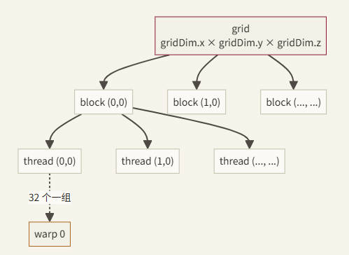
2.2.1 内置变量
...Dim是规模（多大）→ 每个 thread 看到的都一样...Idx是编号（我是第几个）→ 每个 thread 不同grid...关于 block 数量；block...关于 thread 数量.x .y .z是三个独立的维度（dim3 结构体的三个字段），如果只用 1D，.y和.z都自动等于 1 或 0
这些线程通过以下两个独特的坐标来区分彼此：
blockIdx：网格内的块索引threadIdx：块内线程的索引
该坐标变量的类型为 uint3，这是一种由 CUDA 内置的向量类型，从基本整数类型派生而来。它是一个结构体，包含三个无符号整数；分别可以通过字段 x、y 和 z 来访问其各个组成部分。
1 | |
1 | |
网格和块的尺寸由以下两个内置变量来决定：
1 | |
这些变量的类型为 dim3，这是一种基于 uint3 的整数向量类型，用于指定维度。当定义类型为 dim3 的变量时，任何未指定的组件都会被初始化为 1。在类型为 dim3 的变量中，可以通过其 x、y 和 z 字段分别访问每个组件，如下例所示：
1 | |
通常，网格被组织成一个二维的块数组，而每个块又被组织成一个三维的线程数组。
无论是网格还是块，都使用了 dim3 类型，该类型包含三个无符号整数字段。那些未使用的字段将被初始化为 1 并被忽略。
硬件限制：
| 限制项 | 最大值（Compute Capability ≥ 8.0） |
|---|---|
| Block 每维最大线程数 | x:1024, y:1024, z:64 |
| Block 内最大线程总数 | 1024 |
| Grid 每维最大 Block 数 | x:231−1231−1, y:65535, z:65535 |
| 每个 SM 最大活跃线程数 | 2048（sm_80）/ 1536（sm_89） |
| 每个 SM 最大活跃 Block 数 | 16~32（取决于架构） |
Block 内线程总数不能超过 1024，即
blockDim.x * blockDim.y * blockDim.z ≤ 1024
2.2.2 线程索引计算
2.2.2.1 1D
最常用的模式——将线程映射到一维数组：
1 | |
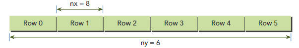
下图是 <<<4, 8>>> 启动后 32 个 thread 的排布：
1 | |
2.2.2.2 2D
1D 也能处理矩阵（手动 row×cols+col 算），但 2D 让坐标自动浮现。维度只影响内置变量怎么编号，硬件并不在乎。处理矩阵时，通常使用 2D Grid 和 2D Block：
1 | |
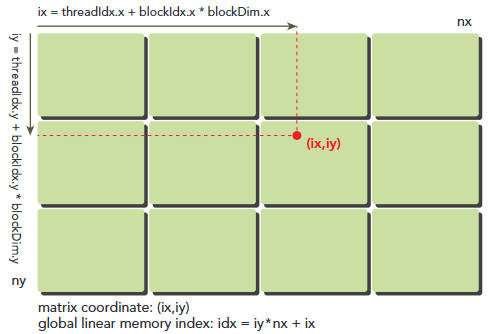
1 | |
下图是一个 grid（2×2 个 block，每 block 是 2×2 thread，共 16 thread）的排布。每个小方格是一个 thread：
1 | |
**x ↔ col、y ↔ row 会影响访存。**warp 按
threadIdx.x变化最快的方式打包 lane。让.x走 col，可让同一 warp 访问同一行的相邻列；反过来通常会产生更多 memory transactions。
-
(row, col) → 一维内存索引
关键认知：C/C++ 里的二维数组在内存中是一维存储的，按 行优先顺序排：先把第 0 行全部存完，再存第 1 行……
1 | |
所以 (row, col) → idx 的公式：
1 | |
具体例子（M=3 行 N=4 列）：
| (row, col) | idx = row × 4 + col | 对应元素 |
|---|---|---|
| (0, 0) | 0 | A00 |
| (0, 3) | 3 | A03 |
| (1, 0) | 4 | A10 |
| (2, 3) | 11 | A23 |
2.2.2.3 3D
3D 用于体数据——比如视频 (帧, 高, 宽)、医学 CT (深度, 高, 宽)、3D 卷积。约定：
x↔ W (width，宽度，最快变化的维度)y↔ H (height，高度)z↔ D (depth，深度，最慢变化的维度)
1 | |
三维 row-major 内存布局——按 z 最慢、y 居中、x 最快变化的顺序排：
1 | |
具体例子 (D=2, H=3, W=4)：
| (z, y, x) | idx 计算 | idx |
|---|---|---|
| (0, 0, 0) | (0×3+0)×4 + 0 | 0 |
| (0, 2, 3) | (0×3+2)×4 + 3 | 11 |
| (1, 0, 0) | (1×3+0)×4 + 0 | 12 |
| (1, 2, 3) | (1×3+2)×4 + 3 | 23 |
总结：
不论几维，多维数组在 row-major 内存里的索引公式都是**“从最慢变的维度向最快变的维度逐层乘进去”**：
2shape = (d_0, d_1, d_2, ..., d_n) // d_0 最慢, d_n 最快
idx = (((i_0 * d_1 + i_1) * d_2 + i_2) * d_3 + ... ) * d_n + i_ncopy1D / 2D / 3D 都是这个公式的特例：
2
3
41D: idx = i
2D: idx = i * cols + j = (i) * cols + j
3D: idx = (z * H + y) * W + x = ((z) * H + y) * W + x
4D: idx = ((b * D + z) * H + y) * W + x // 多了 batch 维度
2.2.2.4 Grid-stride Loop 模式
当数据量大于线程总数时，使用循环让每个线程处理多个元素：
1 | |
2.3 核函数（Kernel）
2.3.1 基本语法
CUDA 核调用是 C 函数语法的一种直接扩展，它通过在尖括号中嵌入内核的执行配置来实现这一功能。
1 | |
| 参数 | 类型 | 必填 | 说明 |
|---|---|---|---|
gridDim |
dim3 或 int |
是 | Grid 中 Block 的数量 |
blockDim |
dim3 或 int |
是 | 每个 Block 中线程的数量 |
sharedMemBytes |
size_t |
否 | 动态共享内存大小（默认 0） |
stream |
cudaStream_t |
否 | 执行流（默认 0，即默认流） |
属于同一块内的线程可以轻松地进行相互通信，而属于不同块的线程则无法协作。对于某个具体问题，你可以使用不同的网格和块布局来组织线程。例如，假设你有 32 个数据元素需要处理，那么你可以将 8 个元素分成一个块，然后同时运行四个这样的块。
1 | |
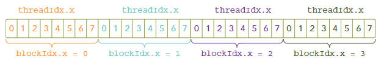
如果你将所有 32 个元素组合成一个块，那么就会得到这样一个单个的块：
1 | |
如果你让每个块只包含一个元素，那么就会得到 32 个块，如下所示：
1 | |
内核调用的过程是与主机线程异步进行的。当内核被调用后，控制权会立即返回到主机端。你可以调用以下函数来强制主机应用程序等待所有内核任务完成。
1 | |
与 C 语言函数调用不同，所有的 CUDA 内核调用都是异步进行的。在调用 CUDA 内核之后，控制权会立即返回给 CPU。
Kernel 函数的约束：
- 返回类型必须是
void - 不能使用可变参数（variadic）
- 不能是类的虚函数
- 不能递归（Compute Capability < 2.0，现代 GPU 均已支持）
- 参数通过值传递，指针必须指向设备内存
2.3.2 计算启动配置
给定数据大小 N 和 Block 大小，计算需要多少个 Block：
1 | |
关键点：(N + blockSize - 1) / blockSize 是整数除法向上取整的标准写法。当 N 不是 blockSize 整数倍时，最后一个 Block 中会有一些线程”越界”，因此 Kernel 内必须做边界检查 if (idx < N)。
2.3.3 错误检查
Kernel 启动是异步的，错误不会立即被捕获：
1 | |
2.4 三种函数修饰符
CUDA 用修饰符来标记函数在哪里执行、由谁调用：
| 修饰符 | 执行位置 | 调用方 | 用途 |
|---|---|---|---|
__global__ |
GPU | CPU（或 GPU 动态并行） | Kernel 入口函数 |
__device__ |
GPU | GPU | Kernel 内部调用的辅助函数 |
__host__ |
CPU | CPU | 普通 CPU 函数（默认） |
1 | |
举个例子，假设有两个大小为 N 的向量 A 和 B，现在需要计算它们的和。下面是在主机上进行向量相加的 C 语言实现代码：
1 | |
这是一个依次执行 N 次迭代的循环代码。如果退出该循环，就会得到以下核心函数：
1 | |
2.5 Warp
如果说 Block 是逻辑上的协作单位，那 Warp 就是物理上的执行单位。SM（Streaming Multiprocessor）以 Warp 为粒度调度执行——一个 Warp 包含 32 个连续线程，它们在同一时钟周期内执行同一条指令（SIMT，Single Instruction Multiple Threads）。
2.5.1 Warp 分歧
当 Warp 内的线程走不同的分支路径时，发生 Warp 分歧——GPU 不得不串行执行两个分支：
1 | |
只要同一个 Warp 内的 32 个线程走相同分支，就不会有分歧惩罚。分歧发生在 Warp 内部，不同 Warp 之间走不同分支完全没有代价。
假设在 16 个线程同时执行这段代码时，cond 为真，但另外 16 个线程中 cond 为假。那么，一半的线程需要执行 if 语句中的指令，另一半的线程需要这些 else 语句中的指令。
同一子线程组中的线程执行不同的指令，这种现象被称为“子线程分歧”。子线程分歧似乎会导致悖论，因为众所周知，同一子线程组中的所有线程在每个周期中都必须执行相同的指令。
如果 Warp 线程的分支出现分歧，那么 Warp 序列就会依次执行每条分支路径，从而使得那些没有选择该路径的线程无法执行任务。这种 Warp 分支现象会导致性能严重下降。在前面的例子中，Warp 的并行度减少了一半：此时只有 16 个线程在活跃执行，而其余 16 个线程则被禁用。当条件分支数量增加时，并行度的损失将会更加明显。
请注意，分支分歧仅发生在某个特定 warp 中。不同 warp 中的不同条件值并不会导致 warp 的分裂。
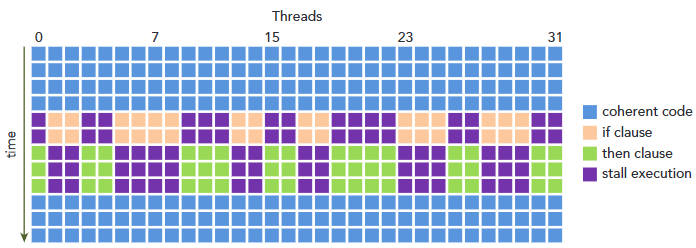